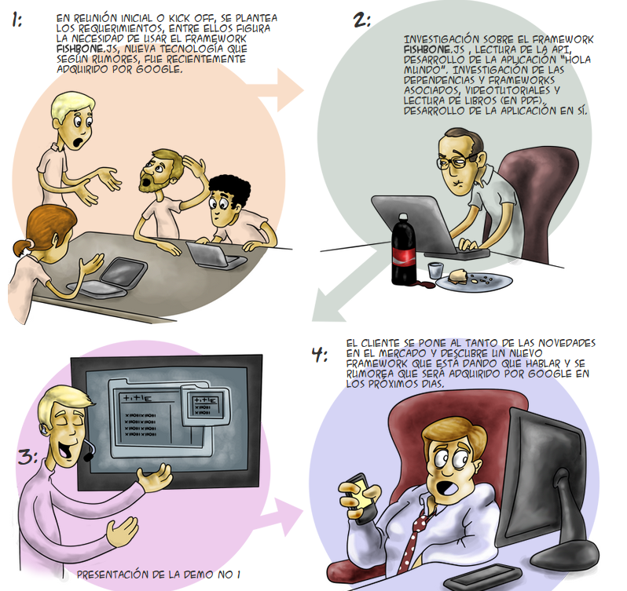
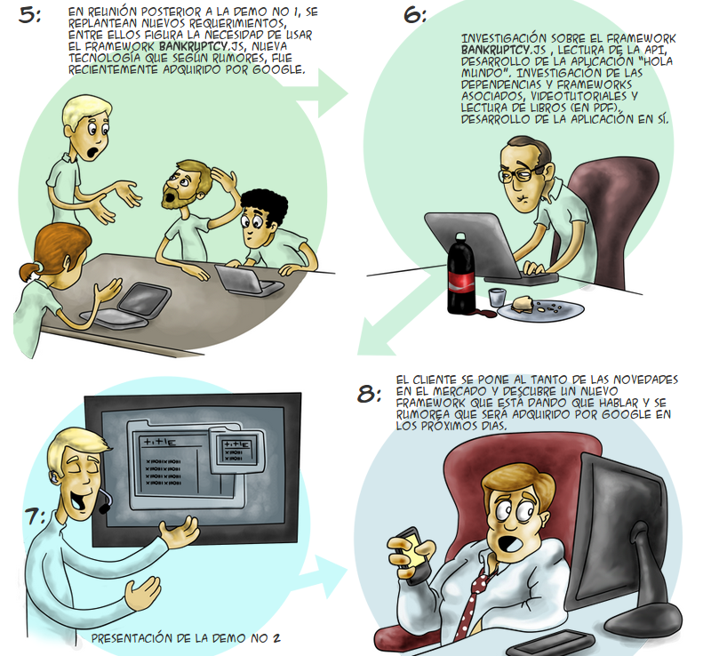

Code-Trainer
Rápido, Flexible y Divertido
creado por Cristian Cortez / @cortezcristian
Sobre mi...
✓ programador tiempo completo (Velocity Partners)
✓ estudié Lic. Cs. Empresariales (U. Austral)
✓ dicto un training de Node.js (UNR FCEIA)
✓ trabajé para Neuralsoft, Airtrack, Globant
Tengo una idea

Mi idea es crear una plataforma de e-learning de avanzada que permita entrenar y formar profesionales del ámbito de sistemas de manera rápida, flexible y efectiva.
Motivación
✓ las tecnologías cambian mas vertiginosamente
✓ los profesionales tienen menos tiempo para entrenarse
✓ cada vez hay mas empresas de sistemas en la argentina
✓ las empresas necesitan contar con contenidos de calidad que les permitan entrenar mejor a sus empleados


¿Cómo hacerla sustentable?
La idea de negocio es producir contenidos de alta calidad, alojarlos en nuestra plataforma y cobrar una membresía a particulares y empreas para que puedan acceder a dichos contenidos.
Para ello necesitamos formar un equipo multidisciplinario para sumar trainings a nuestra plataforma. Esto incluye tareas como selección de la tecnología, creación de temario, material de estudio, edición de video, diseño y gamification.
La plataforma sigue siendo importante, porque nos va a permitir producir contenidos de una manera creativa y va a permitir a los usuarios vivir una experiencia diferente.
Referentes
Algunos referentes a quienes emular:
- CodeSchool
- TreeHouse
- Coursera
- CodeAcademy
- Program.ar
¿Qué cosas nos diferencian?
Durante mi carrera tuve contacto con varias plataformas de e-learning (LMS) como Moodle y E-Front. La estrategia sera tomar eso como producto base y aumentarlo.
¿Por qué deberian elegir Code-Trainer?
✓ Aprende a tu ritmo y en tu tiempo libre
✓ Corrección y resultados en tiempo real
✓ Minimiza los tiempos de setup
✓ Entra en contacto mas rápido con la tecnología
✓ Actualizá tus conocimientos de manera interactiva
¿Cuáles son las innovaciones?
✓ Mejor sistema de incentivos / Gamification
✓ Mejor acceso al material / Cloud
✓ Estadísticas y seguimiento del progreso / Empresas
✓ Compartí tus logros y experiencia con la comunidad / Social
✓ Herramientas adicionales para grabar y contribuir cursos
✓ Y mucho mas...
Avance
¿Hay algo hecho?
- Si, dos prototipos:
✓ Node Wings (Julio 2013)
✓ Ruby Wings (Marzo 2012)